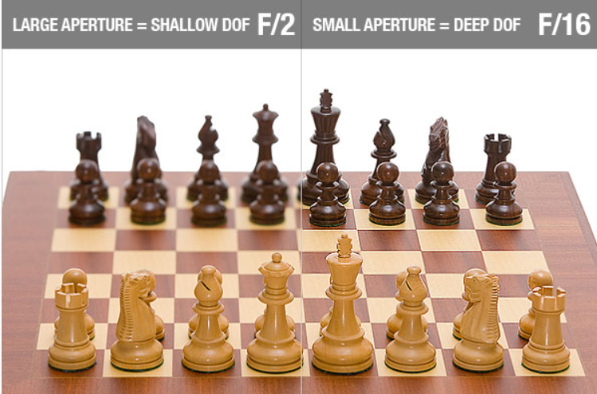
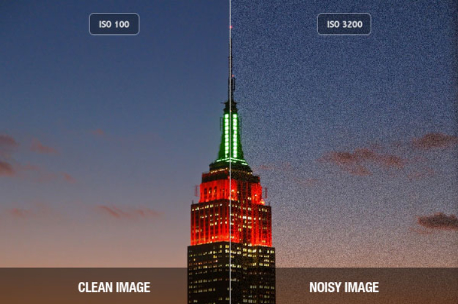
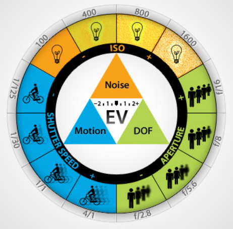

Quantitative Analysis of Human Movement
In order to analyze human movement quantitatively, we must measure human movement. There are many different methods used in biomechanics to perform motion capture. For a closer examination of these methods see the "Motion Capture" lecture. The most common method of measuring human movement is to use film or video recordings with a method called "motion capture". This lab presents the steps required to produce a video tape or film that can be quantified and the typical method of making the measurements.
The Biomechanical Film or Video:
There are only two variables that can be measured by a video or film analysis. These two variables are position and time. However, if we are careful about how we produce the video, we can derive many other variables such as joint angles, velocities, accelerations, centers of mass, etc. The following is a list of requirements:
1) Camera Placement:
A single camera
limits the biomechanist to a planar analysis. So the camera
must
be placed perpendicular to the plane of motion.
The camera should be stationary so that any motion from one frame to
the next would be due to the movement of the subject.
Quite
often, the camera is placed on a tripod and leveled so that the
vertical axis will be in line with gravity and the height of the camera
is at the middle of the frame. Since the camera cannot zoom
in or
out during filming, it must be paced far enough away so as to "see" the
required frame in its entirety. There are methods of using a
panning or moving camera but they require a calibrated background such
that the position and orientation of the camera can be calculated for
each frame.

2) Body segment landmarks are normally placed on the subject in a biomechanical analysis so that joint centers can be digitized more easily. Often, the markers are reflective tape so when a spot light is shined on the subject, the video shows bright lights at each marker that is really the reflected light from the spot light.
3) The image needs to be scaled to life size using an object of known size in the plane of motion. Often, a meter stick or calibrated object of known size is placed in the field of view and in the plane of motion.
4) Exact timing information of frame rate is needed to establish velocity and acceleration. A falling object in the background was used in the old days but this was replaced by light emitting diodes within the cameras and the quartz technology used in modern watches ensures exact precise frame rate in today's video cameras.
Basic Photography for Biomechanists
Whether the image to be analyzed is from a still or video camera, there are some basic rules and techniques that every biomechanist should know in order to obtain a clear, high quality image.

Aperture and Exposure Time:
Aperture refers to the size of opening that the lens uses to allow light expose film or reach the CCD of a digital camera. It is measured in f-stops with the larger numbers (settings) being used when a lot of light is present and lower numbers are used in low light situations. For example F8 is often used outdoors in sunlight while F2.8 or lower is often used indoors with room lighting. Another factor that affects the amount of light that hits the film or CCD is the exposure time which is regulated by the shutter speed. The shutter opens to the set aperture for a period of time and then closes. In biomechanics, this exposure time is measured in a fraction of a second. The scientist must choose a time that is sufficiently short to prevent motion blur yet sufficiently long to get a proper exposure. If the time is too short, the image will be under exposed and be too dark. Therefore, it is important to choose the best aperture and exposure time to yield an image that is sufficiently bright without motion blur. Still photography often uses a flash to increase the amount of light such that a short exposure time can be used and in video, extra lights such as flood lights or TV lights are used. A shutter speed of 1/100th of a second is often sufficient for walking and slower movements while 1/500th or higher is often used for more dynamic movements. The biomechanist first considers the motion to be captured and selects the shutter speed required. Then using a light meter, selects an aperture that will allow a proper exposure. If there is not enough light, extra light must be used or the ISO can be altered.
Depth of Field (DOF):

The depth of field refers to the range of distances from the camera that will be in focus. Objects that are closer or further away from this range will not be in focus. Notice in the figure to the left that the white chess pieces are in focus. However, if light was low and the photographer needed to open the aperture to f/2, the depth of field is small and the black chess pieces are not in focus. The depth of field is quite small at f/2 which means that only a narrow range of objects will be in focus. If more light is available, and an aperture of f/16 can be used, both the white and black pieces are in focus because the depth of field is larger. The biomechanist must be careful to ensure that all objects that need to be digitized are in focus. It is possible for the right arm to be in focus but the left arm is not in focus of a sagittal plane image like the baseball player above.
ISO:

The ISO is another way to alter the exposure. It increases the sensitivity of the CCD to light. A typical value of 100 is used but if the biomechanist finds that the movement requires a shutter speed of 1/500 and the largest aperture of the lens is f/4.0 which does not allow enough light, the ISO can be increased to 400 which allows the available light to make a brighter image. Modern still cameras allow ISO settings of 6400 or even higher which enables fast shutter settings in low light but the image quality becomes noisy or grainy so care should be taken when using ISO as a means to deal with low light. The added benefit of using a supplementary light source like a flash or spot light near the camera is that it tends to fill in shadows that might obscure a joint marker even if the overall image is properly exposed.

Auto Focus:
The other crucial aspect to image quality is the sharpness of the image. Since biomechanical filming is concerned with the plane of motion, the subject is always the same distance from the camera and focus does not need to change. Therefore, the auto focus function should be turned off so the camera does not get confused by anything moving in the background or foreground.
Focal Length (Zoom):
The focal length is also an important consideration. Most people are familiar with a zoom lens that allows a closer view of the subject but this also has complications. The focal length is measured in millimeters with a focal length of 80mm being approximately equal to the view from a human eye. A wide angle lens (<50 mm) increases distortion called the "barrel effect" which can be quite extreme (think of a "fish-eye" lens or the security peep hole in a door). A longer lens (> 200mm) has less distortion but is harder to hold steady and requires a high shutter speed to prevent motion blur from an unsteady hand. Modern lens technology uses "image stabilization" to reduce this problem but biomechanics places the camera on a fixed tripod and does not suffer from this limitation. Often, a longer lens cannot handle apertures larger than f/4.0 which also means more light or a higher ISO is required. However, since perspective distortion is less, a flatter image (long focal length) is preferred in biomechanics.
Bottom Line:
The more light you have, the greater freedom you have to choose aperture, exposure time, ISO, depth of field and focal length. The laboratory setting usually allows extra light from spot lights to be used but many field settings do not and the biomechanist must be prepared to manipulate all of these factors to get the best image possible.
Procedure:
1) Attach the camera to the tripod.
2) Position the camera 3.2 meters from the force platform and attach the 24-105mm zoom lens and set the f-stop to 4.0 and the ISO to 100.
3) Place two meter sticks on either side of the force plate and focus the camera on the near stick, set the shutter speed at 1/13 and take a picture.
4) Move the camera back to the 10 m mark and zoom to about a 100 mm focal length (same view as before) and take another picture.
What effect did the change in focal length have on perspective error?
5) Have a subject stand on the force platform and swing their arms rapidly while a picture is taken.
6) Increase the ISO to 400, 1600 and 6400 and adjust the shutter speed to keep the exposure the same.
What effect did shutter speed have on motion blur?
Compare the noise of 6400 ISO with 100 ISO.
7) Place the camera at 8 m and replace the lens with the 50 mm prime lens. Set the f-stop to 1.8 and the shutter speed at 1/80 and ISO of 100.
8} Have the subject swing their arms again and add the light and increase ISO to get an acceptable exposure with no motion blur or noise.
9) Change the image size to video resolution and take one more picture.